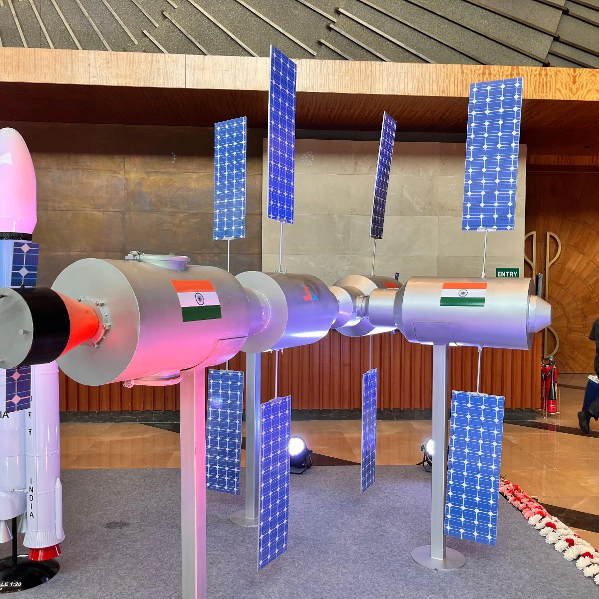
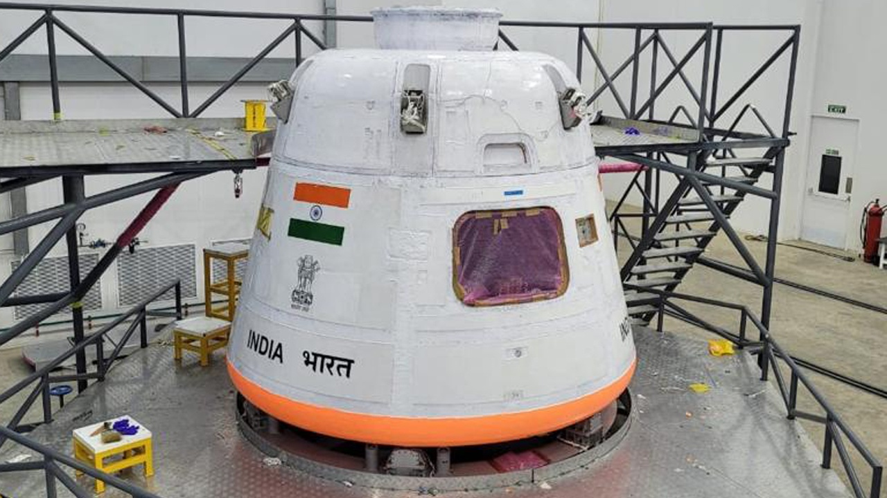
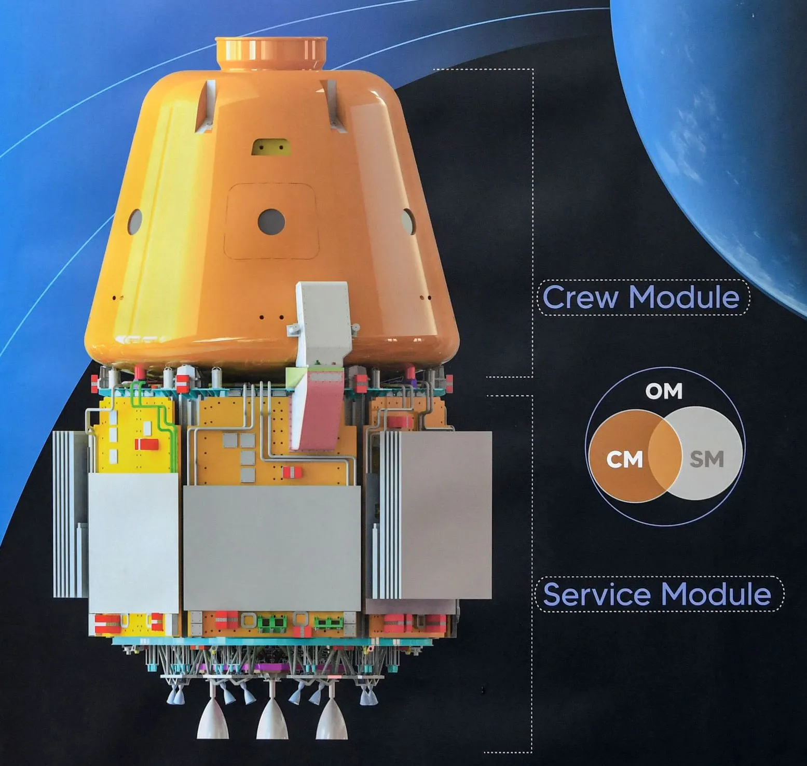
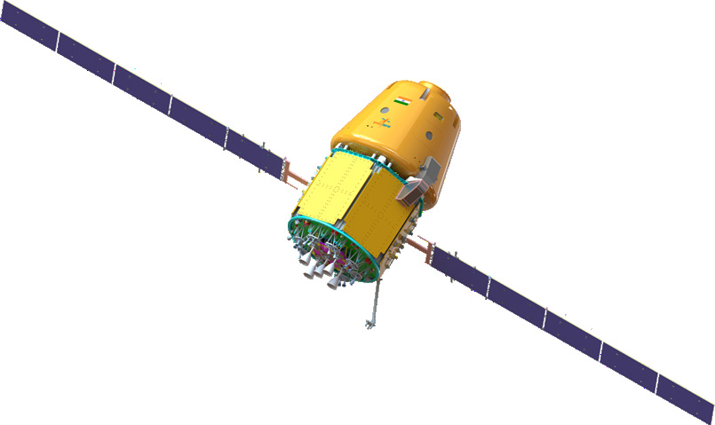
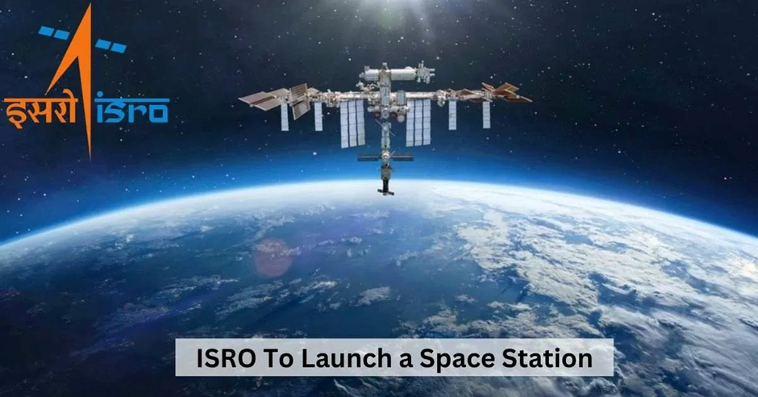
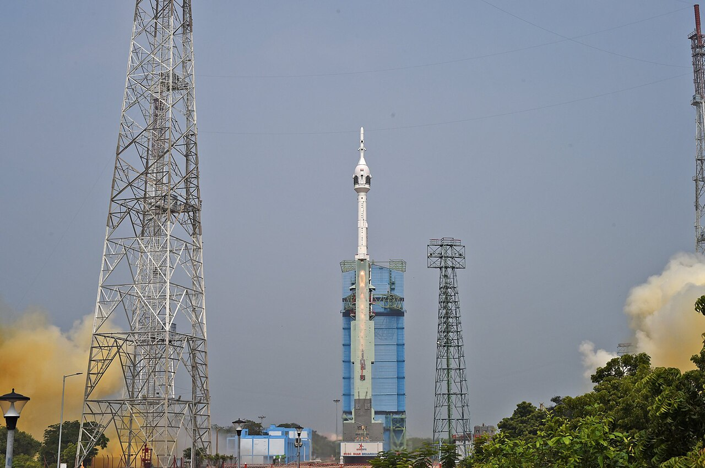
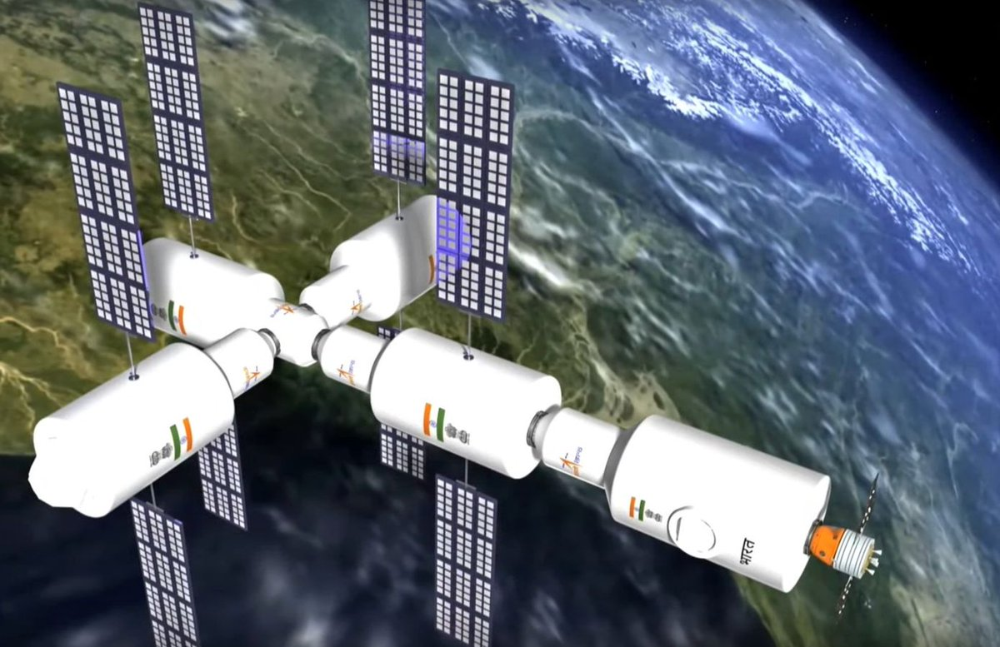

India's own space station — permanently crewed, in orbit by 2035. Not borrowed. Not shared. India's. The next chapter after Gaganyaan, built on every technology ISRO has mastered since 1975.
Watch: BAS — India's Space StationThe Bharatiya Antariksh Station (BAS) — Indian Space Station — is India's plan to establish a permanent, crewed outpost in low Earth orbit by 2035. Weighing approximately 20 tonnes and orbiting at 400 km altitude, BAS will allow Indian astronauts to live and work in space for extended periods of 15–20 days per mission.
The ISS — the current International Space Station — is a 420-tonne, 15-nation project assembled over more than a decade. BAS is a different concept: a compact, purpose-built Indian national station, designed for efficiency and scientific productivity rather than scale. India will build what India needs.
BAS is not a standalone ambition — it is the logical next step in a programme that runs from Gaganyaan's first crewed flights (2027) through operational human spaceflight to a permanent orbital presence. Every Indian astronaut mission after the early Gaganyaan flights will contribute to assembling and manning BAS.
BAS will be assembled module by module over several years — each module launched on HLVM3 and docked in orbit using the docking technology proven by SpaDeX and refined through Gaganyaan operations. ISRO has used the Sanskrit working names Avas (meaning habitation/home) for the core habitation module and Vigyan (meaning science) for the science laboratory module — names that ground India's most ambitious space programme in its own language and heritage.
Unlike the ISS which uses a truss-based solar panel array spanning 109 metres, BAS is designed as a compact hub — optimised for the science India wants to do in microgravity. The 20-tonne target mass is comparable to China's Tianhe core module — a modern, efficient design built for purpose.
BAS orbits at 51.6° inclination — the same as the International Space Station. This is deliberate: at this inclination, BAS passes over most of Earth's populated regions and critically allows future docking compatibility with international spacecraft from ISS, Axiom Station, and other agencies. India's space station is designed from day one for international interoperability.
The Gaganyaan Orbital Vehicle will serve as the crew transportation system — ferrying astronauts to and from BAS on rotation. Uncrewed cargo missions will supply consumables, science equipment, and replacement hardware.
Gaganyaan is not separate from BAS — it is the foundation. Every crewed Gaganyaan mission after the first builds the human spaceflight experience, crew systems, ground operations, and mission control expertise that BAS will require. Gaganyaan-H1 proves the capability. Gaganyaan-H2, H3, H4 build the proficiency. BAS is where that proficiency finds a permanent home.
The ₹20,000 crore revised Gaganyaan budget specifically covers the expanded scope that includes BAS development — the two programmes are budgeted together because they are the same programme at different phases. India is not building a space station after building a human spaceflight programme. It is building one unified human space programme with a station as the destination.







